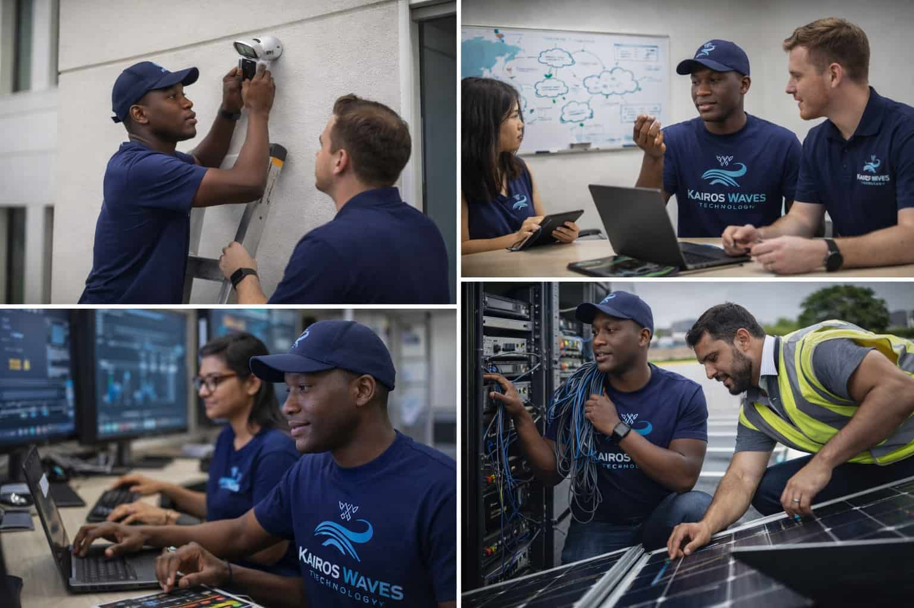
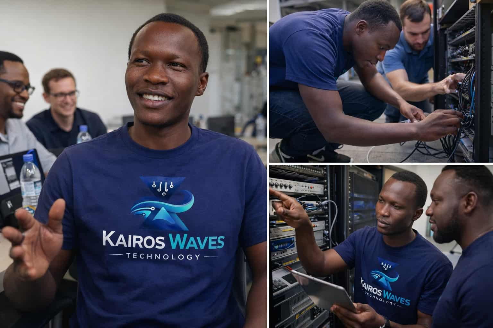
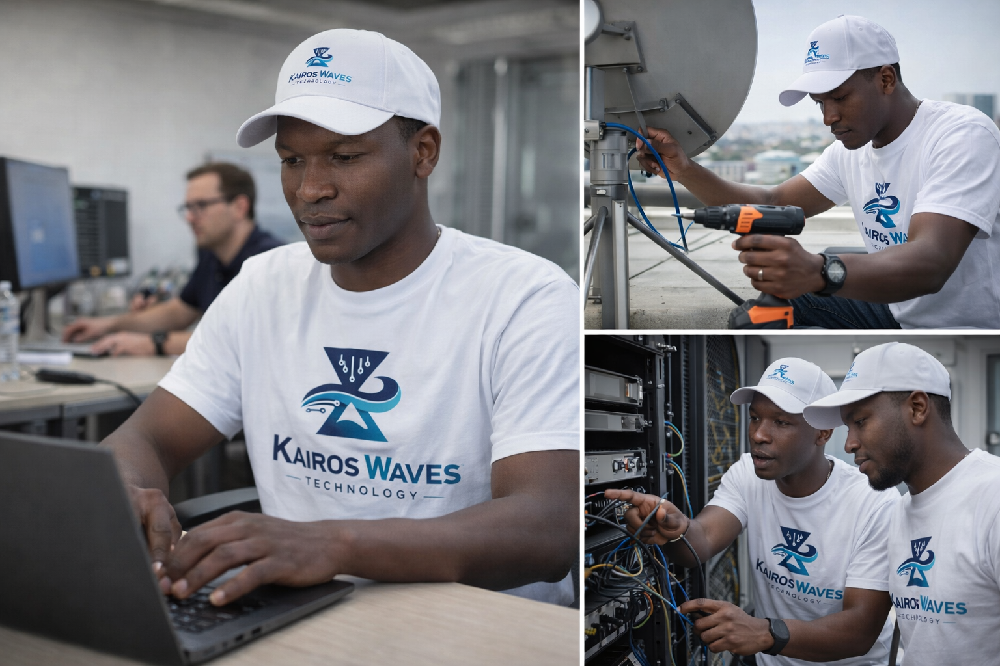
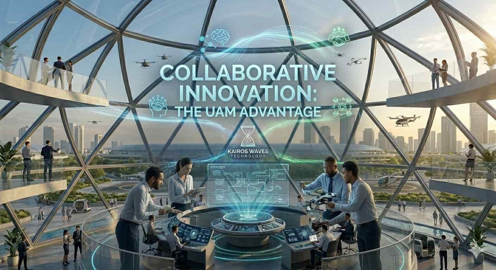

About Kairos Waves Technologies
Kairos Waves Technologies is a modern digital solutions company dedicated to helping organizations navigate and succeed in an increasingly technology-driven world. We specialize in building reliable, scalable, and secure digital products that support innovation, efficiency, and long-term growth.
Our approach combines technical expertise, strategic thinking, and user-focused design to deliver solutions that are both practical and future-ready.

Our Mission
Our mission is to empower businesses and institutions through innovative software, modern web development, and strong cybersecurity practices. We create digital systems that are accessible, efficient, and secure while solving real-world challenges.

Our Vision
We envision a future where organizations of all sizes confidently leverage technology to improve operations, connect with users, and protect critical information. Kairos Waves Technologies aims to be a trusted partner in digital transformation.

Our Core Values
- Innovation: Embracing modern technologies and continuous improvement.
- Reliability: Delivering dependable and high-quality solutions.
- Accessibility: Designing inclusive and user-friendly systems.
- Security: Prioritizing data protection and system integrity.

Why Choose Kairos Waves Technologies
We take a client-centered approach to every project, ensuring that each solution aligns with specific goals and challenges. Our services emphasize performance, maintainability, and best practices in web standards and security.
By combining thoughtful design with strong technical foundations, we help organizations build digital solutions they can trust today and grow with tomorrow.